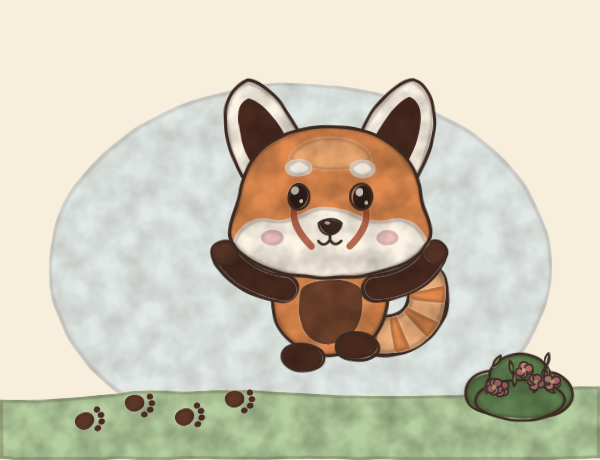
Milestone
First steps!
Three wobbly steps from the sofa to the cat. The cat was not impressed.
made with Panda Domi
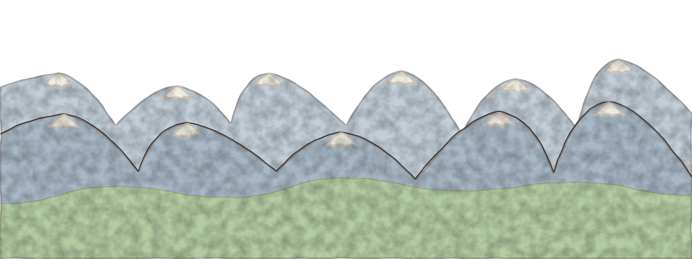
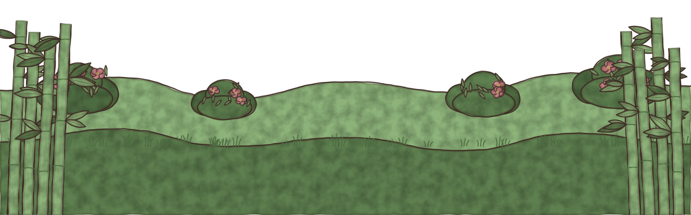
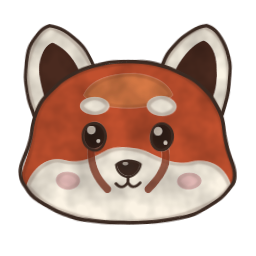
a family journalA cosy red panda journal that grows up with your family.
Share the moment, not your child.
Meet the pandas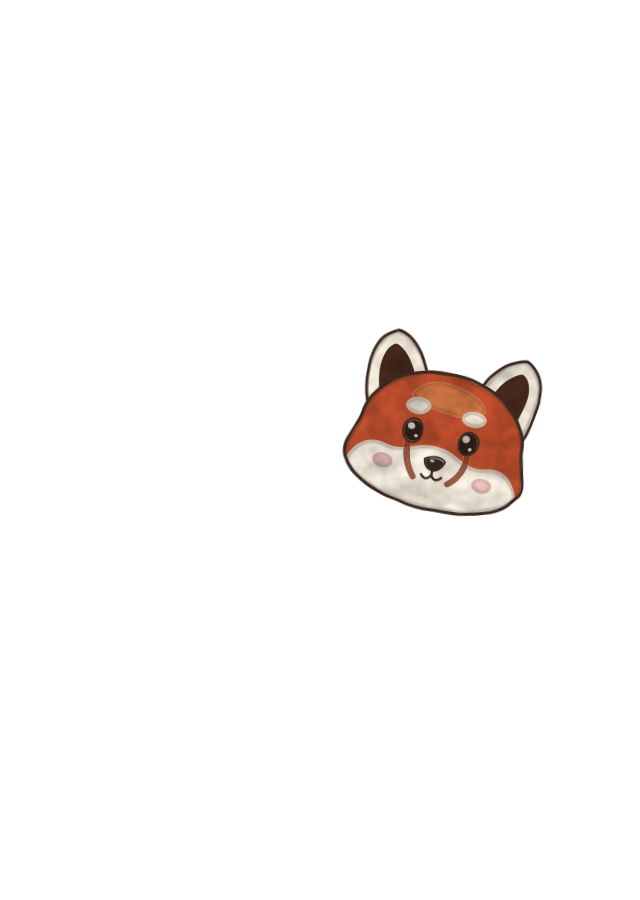
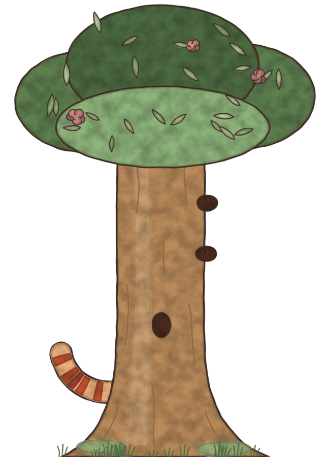
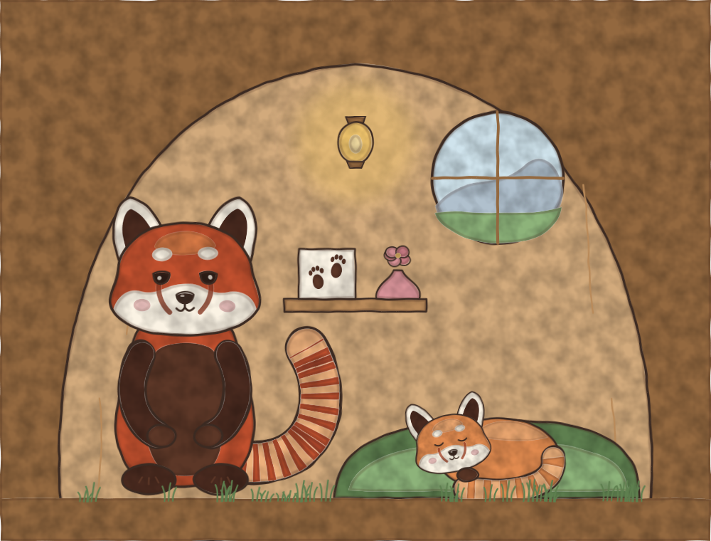
When your baby arrives, your big red panda moves into a cosy den in a quiet valley. A tiny cub sleeps there too, curled up in the moss.
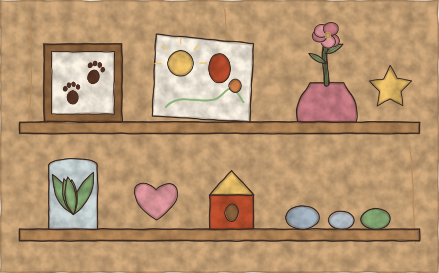
First steps, a funny face, a word nobody expected. You share it as a little panda card, and your panda adds a keepsake to the den. Over the months, the den fills up with your family's year.
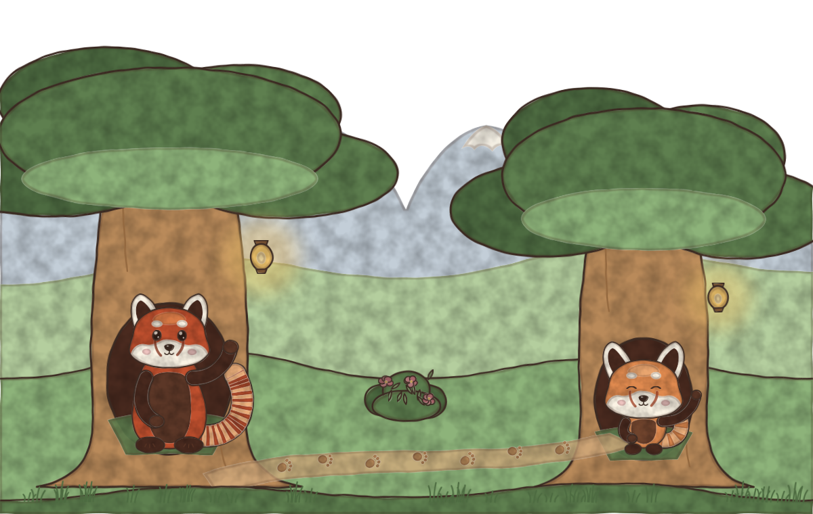
One day, when you decide your child is ready (not when a birthday says so), the cub becomes theirs to play. They count on the farm, read the little signs and hear the owl's bedtime story. Later the cub builds its own den nearby, and the two pandas visit each other.
A card is panda art and a few warm words. That is all you send to the family chat. One tap to choose, one to fill in, one to share.

Milestone
Three wobbly steps from the sofa to the cat. The cat was not impressed.
made with Panda Domi
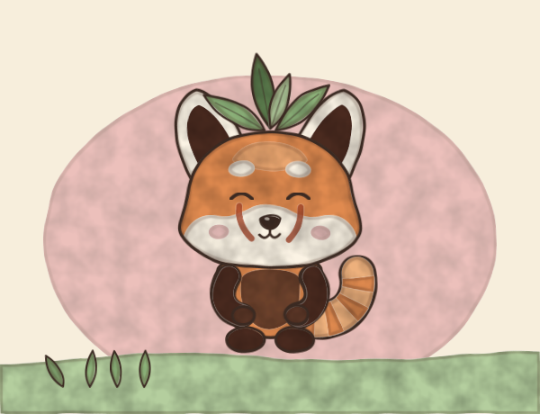
Funny moment
Very proud of it. Would not take it off for lunch.
made with Panda Domi
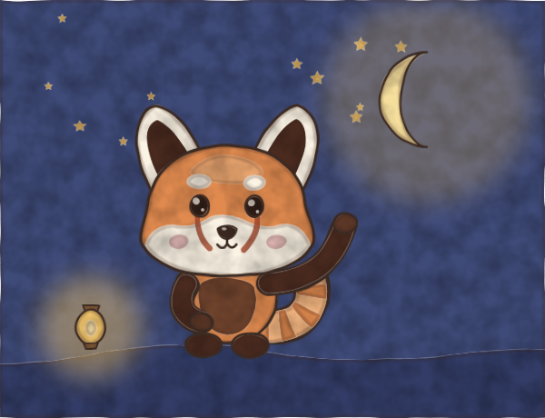
What they said
On the walk back from Grandma's, half asleep.
made with Panda Domi
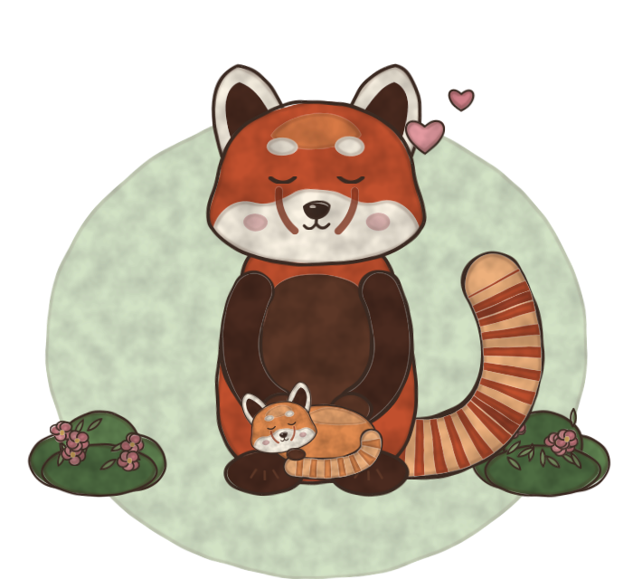
Panda Domi is being made right now. The free journal comes first. Paid extras come later, and only grown-ups will ever see them.
To hear when there is news, add the news feed to any feed reader. No sign-up, and we never learn who you are. Or simply come back some time: nothing is lost by being away.